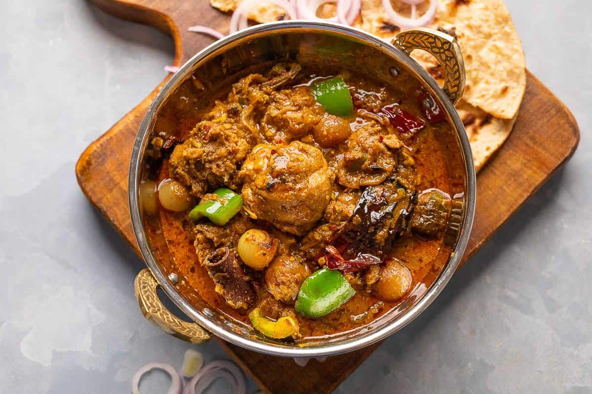

Recipe Of Pakistani Karahi

Pakistani Karahi
This dish gets its name from a karahi, a flat open pot used a lot in
Pakistani and Indian cooking. In spite of its name, this recipe can be
made in any pot. My mom came up with this recipe; it's a little spicy (by
Pakistani standards), but simple and foolproof.
Ingredients:
- Sunflower Oil
- Chicken
- Water
- Ground Cumin
- Slat
- Ginger
- Garlic Paste
- Red Chilli Powder
- Ground Turmeric
- Ripe Tomatoes
- Chile Peppers
- Cilantro Leaves
Steps:
-
Heat oil in a large pot or karahi over high heat. Add chicken pieces and
cook until starting to brown.
-
Add water, cumin, salt, ginger & garlic paste, red powder, and turmeric;
cook and stir until fragrant.
- Stir tomatoes and green chile peppers into the pot.
-
Reduce heat to low, cover, and cook until chicken pieces are no longer
pink at the bone.
-
Sprinkle cilantro leaves over chicken and cook until leaves look
slightly wilted, about 30 seconds.